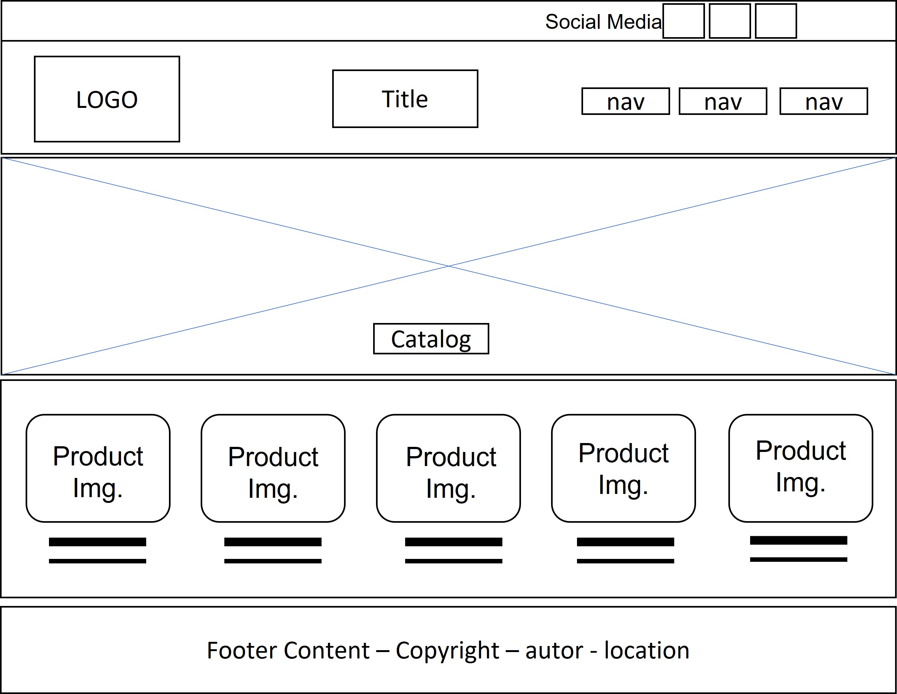
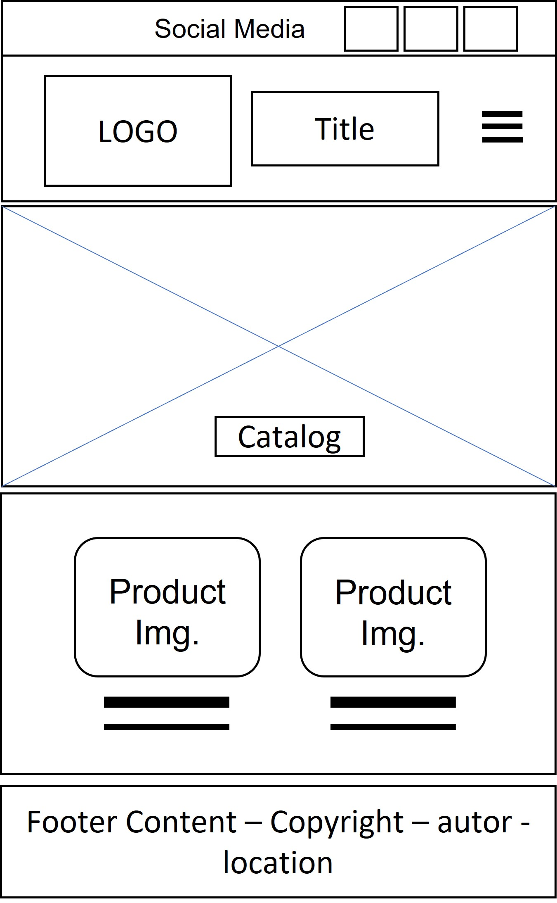

Site Name: Diarom: Exquisite Family Delights
Site Domain: diaromdesserts.com
Reason: The subject of this website was chosen to reflect the heart and soul of our family business. The goal is to create a warm, inviting online presence that showcases the love and dedication we pour into every product.
The site provides a hub for showcasing our delicious desserts, savory bites, and cakes. It offers a seamless ordering experience and engages with customers through our story, blog, and testimonials.
Primary Color: #021840 (used for headings)
Secondary Color: #fff7df (used for backgrounds)
Terciary Color: #000 (used for paragraphs)
Main Font: Montserrat (used for body text)
Secondary Font: Josefin Sans (used for headings)
Auxiliary Font: Roboto (used by default)
Large screen wireframe of the project:
Mobile screen wireframe of the project:
